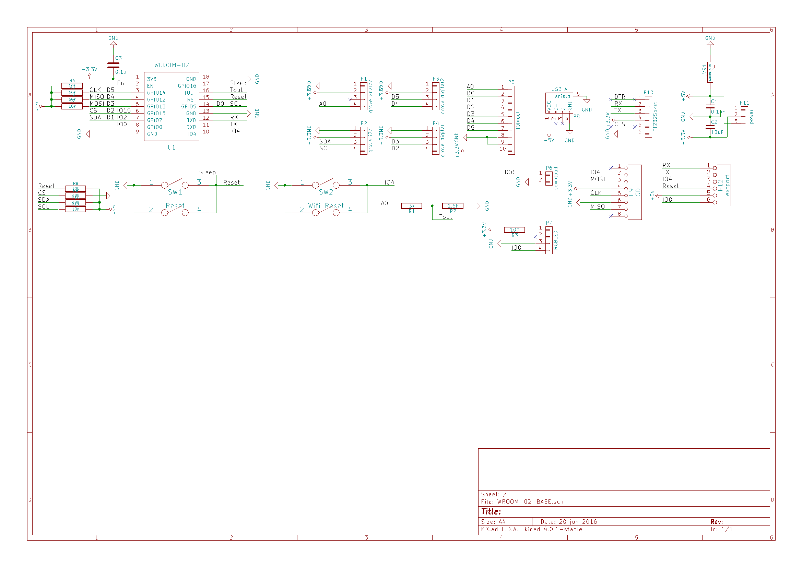

Nefryのトップページ
「Nefry（ねふりー）」とは、MilkcocoaやmyThings、IFTTTなどのインターネットのサービスとハードウェアを簡単に接続できるモジュールです。
また、スマートフォンで使うようなモバイルバッテリーで動くので、場所を選ばずに使えます。
Link
プログラム共有用にもう一つサイトがあります！公式サイトはこちら！

| size(Include case) | 77.5mm*34mm | size | 75mm*27mm |
| Input Voltage (USB) | 5V | MAX Input Voltage | 15V |
| Operating Voltage | 3.3V | Output DC Current | 1.5A |
| Wi-Fi Network Protocol | 802.11b/g/n | Wi-Fi Encryption Technology | WEP/TKIP/AES |
| controller | ESP-WROOM-02 | Flash Memory | 4MBytes |
Nefryはどこで購入できるの？
dotstudioさんにて発売中！
Nefryでできること
LIGブログで記事を連載中です。
プログラムを書くための環境構築をまとめました！
 さくっと生活を便利にする！FRISKサイズのIoT向けデバイス「Nefry」を使ってみよう【環境構築編】
さくっと生活を便利にする！FRISKサイズのIoT向けデバイス「Nefry」を使ってみよう【環境構築編】
Milkcocoaというリアルタイム通信サービスとの連携をまとめました！
 NefryとMilkcocoaを連携させて、WebサイトにリアルタイムでPush通知してみる
NefryとMilkcocoaを連携させて、WebサイトにリアルタイムでPush通知してみる
簡単に自分好みのサービスをつくれるIFTTTとNefryを繋ぐ話をまとめました！
 Webサービス同士を連携できる「IFTTT」と自作IoTデバイスを繋いで生活を便利にしてみた
Webサービス同士を連携できる「IFTTT」と自作IoTデバイスを繋いで生活を便利にしてみた
Nefryをプログラムするときに便利なライブラリ関数
Qiitaにてまとめておりますので、ご覧ください。Nefryライブラリ関数まとめ
ドキュメント
Nefryのドキュメントとなっております。https://wamisnet.github.io/Nefry_manual.pdf
ケースの組み立て方
ケースのAIデータもありますので、カスタマイズしたオリジナルケースを作ることも可能です。 組み立て方のコツを書いてありますのでぜひご覧ください。http://fabble.cc/wamisnet/nefry-case
ピンアサイン

設計情報
回路図

配線図

更新情報
2016/11/22：ページ作成
2016/12/11：CocoaBitなど追加
2016/12/25：Nefryライブラリ2.3.0の関数ページを追加